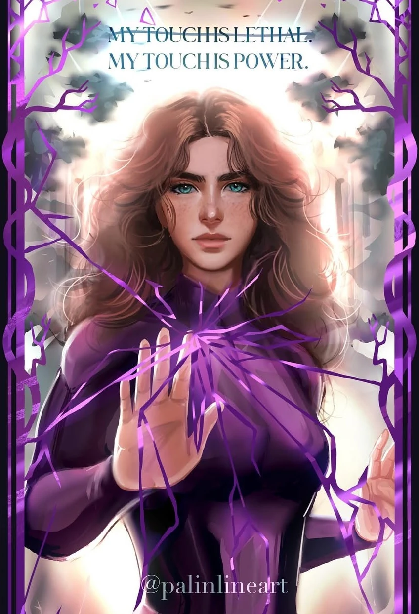
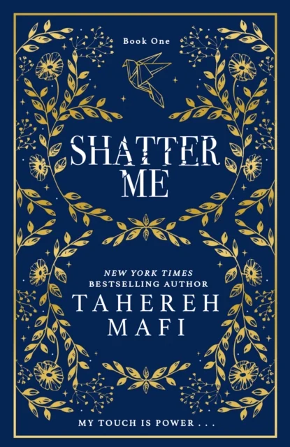
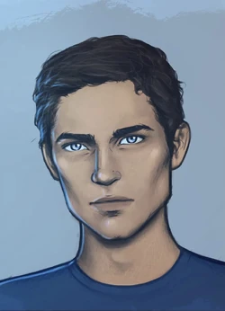
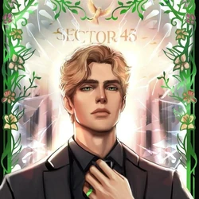

Shatter Me by Tahereh Mafi
Shatter Me features Juliette Ferrars, a 17-year-old girl whose touch is lethal. The story begins with her in an asylum, where she has stayed for over 250 days. She gets a new cellmate, Adam Kent, who she later learns is a soldier of the Reestablishment (the ruling dictatorial organization). She later meets Aaron Warner Anderson, Chief Commander of Sector 45, who wishes to use her abilities for the Reestablishment.
Dystopian / Enemies-to-Lovers
This is a 10-book, completed series (Shatter Me):
- Shatter Me
- Destroy Me
- Unravel Me
- Fracture Me
- Ignite Me
- Defy Me
- Imagine Me
- Reveal Me
- Shadow Me
- Believe Me


Book Trailer
Important Characters
There are several main characters in Shatter Me. Some of the most important ones include:
Juliette Ferrars
Power: Lethal Touch
Juliette grew up in an abusive, adoptive family. Initially, she is unable to control her powers, making it so that she accidentally kills several others. Later, she is able to gain control of her powers.
Adam Kent Anderson

Power: Neutralization of Others' Powers
Adam starts out as the main male character and Juliette's love interest. At the end of the book, he helps her escape from the asylum. Due to his powers, he is the first person Juliette has met who is able to withstand her touch.
Aaron Warner Anderson

Power: Absorption and Amplification of Others' Powers
Aaron initially seems like the villian of the story, forcing Juliette to test out her powers by seemingly making her kill countless others (really, it is just a simulation). Later, as Juliette is about to escape from the asylum, we discover that Aaron is also able to withstand her touch.
| Term | Definition |
|---|---|
| The Reestablishment | The ruling government/control system |
| Commanders | High-ranking leaders in the Reestablishment |
| The Restorative | The prison/asylum-like holding place |
| Sector 45 | The area/district the story centers around |
| The Base | Where characters are kept/managed |
| Point Omega | The resistance group / safe place |
| Propaganda | Messaging used to control people |
Quotes
Powerful lines in the novel that will encourage you to start reading! If you've already read the series, take the time to test your knowledge! Who spoke the below lines?
“All I ever wanted was to reach out and touch another human being not just with my hands but with my heart.”
Juliette Ferrars
“It sounds crazy, to think that I cared so much without ever talking to you.”
Adam Kent
“Because I'm in love with you.”
Adam Kent